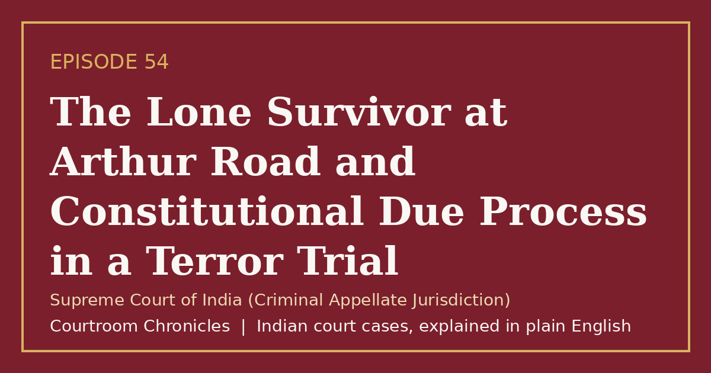

Episode 54
The Lone Survivor at Arthur Road and Constitutional Due Process in a Terror Trial
Even in the prosecution of the sole surviving gunman of the 2008 Mumbai terror attacks, the Supreme Court enforced strict constitutional and evidentiary standards.
Criminal lawConstitutional lawEvidenceNatural justice
#CourtroomChronicles#IndianLaw#CriminalLaw#DueProcess#LegalAid#ConstitutionalLaw#SupremeCourtOfIndia

Listen
- Court
- Supreme Court of India (Criminal Appellate Jurisdiction)
- Date of Decision
- August 29, 2012
- Attack Window
- November 26 to November 29, 2008 across Mumbai (166 killed and 238 injured)
- Capture
- Sole surviving gunman apprehended alive at Girgaum Chowpatty early on November 27, 2008
- Trial Venue
- Special court inside Arthur Road Central Prison, Mumbai (convicted and sentenced in May 2010)
Key takeaways
- Every accused person has a constitutional right to legal aid from first appearance before a magistrate, regardless of the gravity of the charge.
- Electronic records, forensic science, and procedural safeguards under Section 164 are decisive in complex criminal trials.
- Even in the gravest national security cases, Indian courts enforce rigorous appellate scrutiny and constitutional due process.
The case in brief
During a coordinated sixty-hour armed assault across Mumbai in November 2008 that left 166 people dead and 238 injured, one of ten gunmen was captured alive at a police barricade at Girgaum Chowpatty when an unarmed officer held onto his rifle barrel despite suffering fatal gunfire. The surviving attacker was tried in a high-security special court inside Arthur Road Central Prison, where prosecutors relied on eyewitnesses, railway station camera footage, maritime navigation logs, and a judicial confession.
In May 2010, the trial court convicted the accused on charges including murder and waging war against the Government of India and imposed the death penalty, which the High Court confirmed in February 2011. On appeal to the Supreme Court, senior defense counsel appointed by the court challenged the voluntariness of the confession, the absence of legal counsel during early police custody, and the applicability of waging war provisions to non-state militants.
On August 29, 2012, the Supreme Court upheld the convictions and death sentence while affirming vital constitutional safeguards for all criminal defendants. The bench ruled that the right to free legal aid begins at first production before a magistrate rather than at trial, though its pre-trial absence had not prejudiced the defence given overwhelming independent evidence, and held that asymmetric armed terror assaults aimed at destabilizing the nation constitute waging war under Section 121.
Timeline
- Mumbai Terror Attacks Begin
Ten armed attackers land by sea and launch coordinated assaults on railway stations, hotels, and landmarks across Mumbai.
- Sole Gunman Captured Alive
Police intercept a commandeered car at Girgaum Chowpatty and capture one attacker alive after an unarmed officer tackles him.
- Special Court Death Sentence
A special sessions court at Arthur Road Central Prison convicts the surviving attacker and imposes the death penalty.
- High Court Confirmation
The Bombay High Court confirms the death sentence under Section 366 of the Code of Criminal Procedure.
- Supreme Court Upholds Conviction
The Supreme Court affirms the death sentence, defines early legal aid duties, and clarifies waging war in asymmetric terror attacks.
What the court decided
Appeals dismissed; the Supreme Court confirmed the death sentences imposed by the special trial court and affirmed by the Bombay High Court, while laying down binding constitutional rules on pre-trial legal aid.
Key holdings
- The right to legal representation under Articles 21 and 22(1) attaches from the moment an accused is first produced before a magistrate, and failure by magistrates to offer legal aid is a dereliction of duty.
- Lack of legal counsel at the pre-trial stage did not vitiate the trial because the accused received full representation during trial and appeals and suffered no demonstrable prejudice.
- A judicial confession recorded under Section 164 after repeated cooling-off periods and judicial cautions was voluntary and corroborated by railway station video, maritime navigation records, and forensic evidence.
- An organized, cross-border armed attack designed to strike at the sovereignty and economic heart of the country constitutes waging war against the Government of India under Section 121.
Legal principles
Early Right to Legal Aid
An indigent or unrepresented accused must be offered free legal assistance at state expense at the very first production before a magistrate, not merely when trial begins.
In this case: The court directed all magistrates nationwide to inform arrested persons of their right to legal aid at first production and record their response.
Waging War in Asymmetric Conflict
The offence of waging war against the state is defined by the intent to subvert sovereignty and public authority through organized violence, not by conventional uniforms or state armies.
In this case: The bench held that coordinated urban terror warfare directed from abroad against Indian institutions squarely falls within Section 121.
Corroboration of Judicial Confessions
A confession recorded by a magistrate with strict safeguards against police influence is admissible when corroborated by independent physical and electronic evidence.
In this case: Medical age tests, eyewitness identifications, station surveillance recordings, and maritime GPS waypoints independently verified the confession.
The law then and now
Because the offences took place in November 2008, the trial and appeals were governed by the Indian Penal Code, 1860, the Code of Criminal Procedure, 1973, and the Indian Evidence Act, 1872.
Left: the law applied to this case. Right: the matching provision today (the new criminal codes apply only to offences on or after 1 July 2024).
- Indian Penal Code, 1860Section 121Waging, or attempting to wage war, or abetting waging of war, against the Government of IndiaBharatiya Nyaya Sanhita, 2023Section 147Waging, or attempting to wage war, or abetting waging of war, against Government of India
Re-enacted as Section 147 of the Bharatiya Nyaya Sanhita, 2023, retaining death or life imprisonment for waging war against the Government of India. See all 2 episodes on this provision →
Replaced by Section 103 of the Bharatiya Nyaya Sanhita, 2023, retaining death or life imprisonment for murder while adding a specific sub-section for mob lynching. See all 26 episodes on this provision →
Re-enacted as Section 183 of the Bharatiya Nagarik Suraksha Sanhita, 2023, adding electronic audio-video recording options and jurisdictional flexibility. See all 2 episodes on this provision →
- Bharatiya Nagarik Suraksha Sanhita, 2023Section 341Legal aid to accused at State expense in certain cases
Replaced by Section 341 of the Bharatiya Nagarik Suraksha Sanhita, 2023, continuing state-funded legal aid for unrepresented accused before Courts of Session.
Replaced by Section 63 of the Bharatiya Sakshya Adhiniyam, 2023, expanding electronic record admissibility and requiring a standardized hash-verified certificate. See all 2 episodes on this provision →
- —
Unchanged.
Sources
- Judgment of the Supreme Court of India, August 29, 2012
- Constitution of India (Official Legislative Department Text)
- Bharatiya Nyaya Sanhita, 2023 and Indian Penal Code, 1860 Comparative Table (UP Police)
- Bharatiya Nagarik Suraksha Sanhita, 2023 and Code of Criminal Procedure, 1973 Comparative Table (UP Police)
- Bharatiya Sakshya Adhiniyam, 2023 and Indian Evidence Act, 1872 Comparative Table (UP Police)